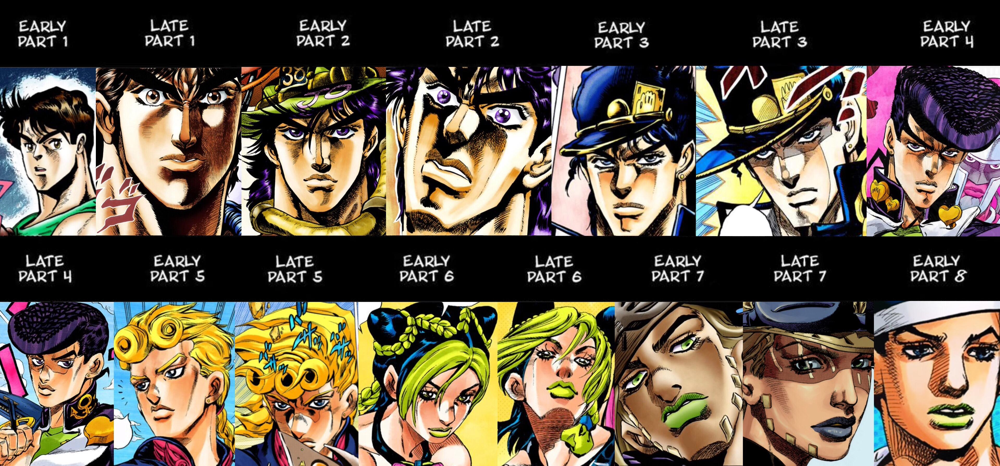

Hirohiko Araki nacido en Sendai el 7 de Junio de 1960 (61 años de edad) es un dibujante de manga Japonés y autor de la serie de manga y anime JoJo's Bizarre Adventure, debuto bajo el seudónimo Toshiyuki Araki en 1980 con su one-shot Busō Poker, y comenzó su carrera profesional con las series cortas Mashōnen B. T., Baoh: El Visitante, y Gorgeous Irene. Nacido en Sendai, El 7 de Junio de 1960. En su juventud, Araki vivía con su padre, un empleado de oficina; su madre, una ama de casa; y sus dos hermanas gemelas idénticas más jóvenes.Al crecer, Araki supuso que vivía en una casa sin ningún tipo de bocadillos. En realidad, sus hermanas solían comer todos los bocadillos ubicados en la casa antes de que llegara a casa desde la escuela. Incluso cuando había tres bocadillos, una para cada uno de ellos, las hermanas solían comerlos todos y procederían a ocultar toda evidencia de haberlo hecho. Cuando estos hechos salieron a la luz, una pelea solía entrar en erupción; y un acontecimiento de este tipo podría ocurrir sobre una base diaria. Araki a menudo sentía una sensación como de exclusión y mala voluntad hacia sus hermanas que a veces se sentía reacio de regresar a casa. Solía encontrar alivio en pasar tiempo a solas en su habitación, leyendo mangas clásicos de los años 70 y la colección de su padre de libros de arte, que Araki asume formaron su motivación para dibujar manga.
Araki dibujó su primer manga mientras estaba en cuarto grado. Asistió a una misma a través de la escuela secundaria y preparatoria, que era donde un amigo le felicitó por un manga dibujó por primera vez. Araki pensó que si su primer fan pensó que era bueno, puede ser que deseara convertirse en un artista manga. Así, empezó a dibujar manga en secreto de sus padres.
Comenzó presentando trabajos a los editores durante su primer año de escuela secundaria; sin embargo, todas sus presentaciones fueron rechazadas. Al mismo tiempo, otros artistas que estaban alrededor de su edad continuaron haciendo grandes sensaciones con sus debuts. Araki no podía entender por qué estaba siendo rechazado, por lo que decidió terminar una presentación trabajando toda la noche, ir en un viaje de 4 horas para hacer una visita a los editores en Tokio, y pedirles una explicación.
Al principio tenía la intención de visitar las oficinas de Shōgakukan, que publicaba la revista Shūkan Shōnen Sunday, pero quedo intimidado por el tamaño de su edificio, y decidió llevar su presentación al edificio más pequeño de Shūeisha (editores de la revista Shūkan Shōnen Jump) ubicado al lado. Era mediodía cuando realizó su visita, pero un editor novato (unos 185 cm de altura) estaba allí de casualidad, así que le mostró su trabajo.El editor, después de leer la primera página, bromeó con prontitud "tú corrector líquido se ha filtrado (no lo has arreglado)": fue criticado cada vez que el editor hojeó cada página. Araki, agotado de haber pasado despierto toda la noche, se sentía como que se iba a desmayar. Sin embargo, después de que había terminado, se le dijo que podría ser bueno, y se le dijo de inmediato que lo arreglara para los Premios Tezuka dentro de cinco días. Esa presentación fue "Busō Poker", que ganó el premio finalista en los Premios Tezuka.
El dibujo de Araki implica comúnmente figuras idealizadas en poses amplias y expresivas a escalas y ángulos aventurados; con líneas fuertemente entintadas y planos dispersos ennegrecidos; prestándoles un efecto escultural. En las ilustraciones y páginas en colores, Araki varía yuxtaposiciones de color más o menos complementarios.
En términos de ilustración, la comparación puede hacerse entre Phantom Blood, Battle Tendency y Stardust Crusaders) y los hipermasculinos, con ideales anatómicos aplicados por Tetsuo Hara en Hokuto no Ken, y hace referencia por Araki en relación con los héroes de acción de la década de 1980. Durante La publicación de JoJo’s se puede ver y apreciar un claro salto en su estilo de dibujo, esto se puede notar en Diamond Is Unbreakable, donde marca una transición a un modelo más intersexual; mientras que Steel Ball Run, se ve un mayor realismo, junto con la incorporación adicional de ideales de belleza en consonancia con el modo en el diseño de moda.
La referencia a las ilustraciones de artistas como Antonio López y Tony Viramontes informa una serie de ilustraciones individuales y poses de personajes en la obra de Araki a partir de 1987 - 1992; disminuyendo a partir de entonces, junto con un mayor uso de referencias fotográficas. Ejemplos limitados de las vestimentas prestadas de diseños de moda contemporáneos han sido identificados.
Temas como la inmortalidad y la justicia se le ocurrían cosas como que los seres humanos por naturaleza buscaban y valoraban. Araki también había estado en un viaje a Italia dos años antes de la creación de la Parte I: Phantom Blood, donde identificó la exaltación de la belleza humana abierta característica del arte renacentista. Araki combinaría estos ejemplos en la formulación de la trama básica y el estilo visual de Phantom Blood.
El estilo de dibujo de Araki es Descrito como el mismo como “clásico”, demostrando una gran admiración, por Leonardo da Vinci, además de que ha nombrado a Paul Gauguin y su acercamiento a la teoría del color como una influencia.Durante su proceso de dibujo (video de este en “Links referentes”) es claro de cómo durante todo momento utiliza referencias, de diversas revistas de moda o el uso de libros sobre las esculturas y el arte occidente, como las esculturas y estatuas de la antigua Grecia la cual es común de ver como usa esta para inspirarse en diversas poses para los personajes.
Se trata de un autor que ha marcado tendencia, describiendo una carrera que ha traspasado fronteras, tanto físicas como culturales, llegando a generar un fuerte impacto en internet y en redes sociales, donde se rumorea que es un vampiro dado el hecho de que a sus 60 años siga luciendo tan joven. Hablamos de todo un creativo, que ha luchado por dejar huella con su estilo y que influencia a todo aquel que contempla su arte
